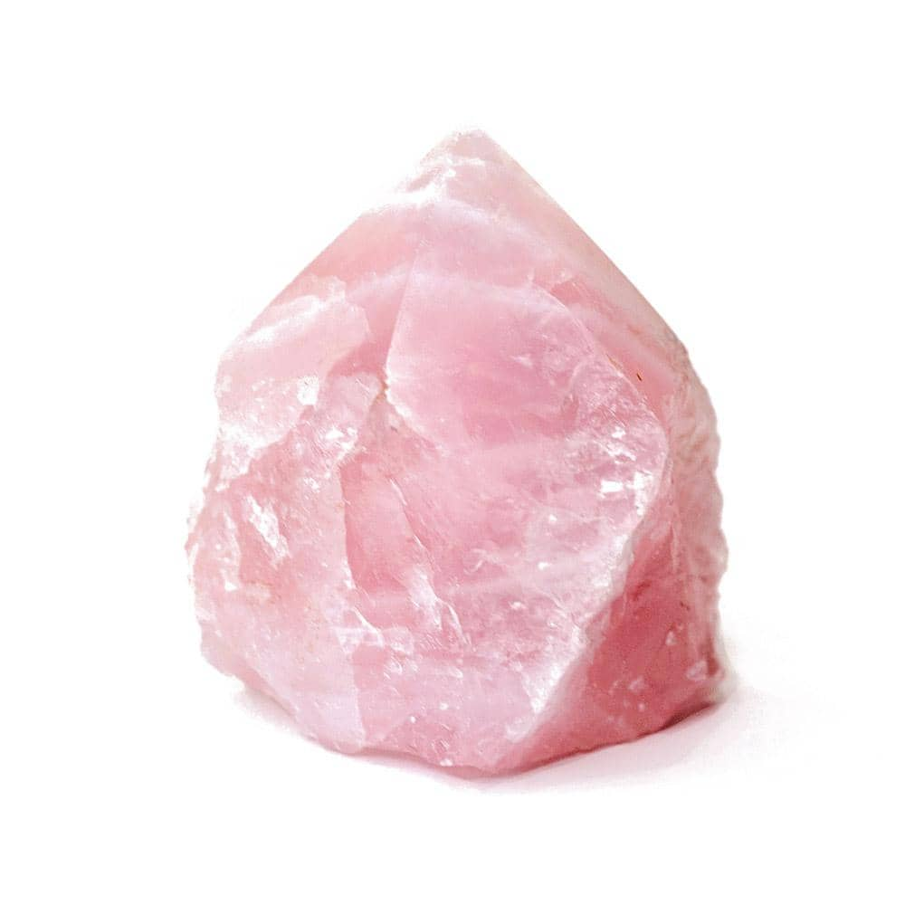
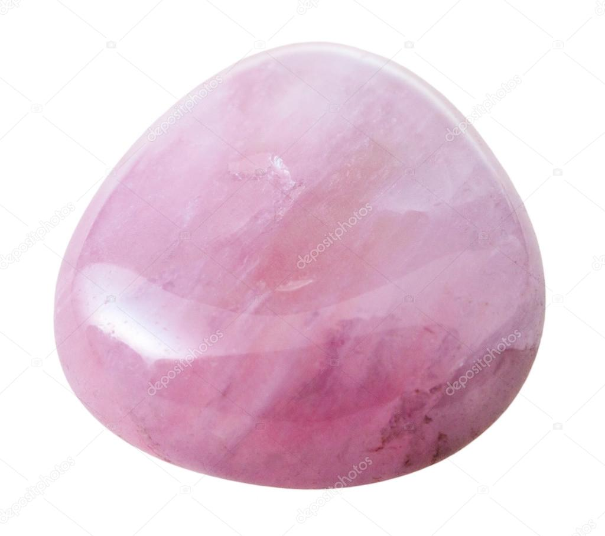

Rose Quartz
 Information
Rose Quartz gemstone has been found naturally in nature and mostly it is available worldwide locations like Madagascar, India, Brazil, USA and South Africa regions as well.
Rose quartz is known as a healing crystal and the stone of unconditional love. It's believed by some to emit strong vibrations of love, which are thought to: support emotional and relationship healing. inspire compassion. boost feelings of peace and clam.
Health Benefits
You can find here some Healing Properties.
Outfits